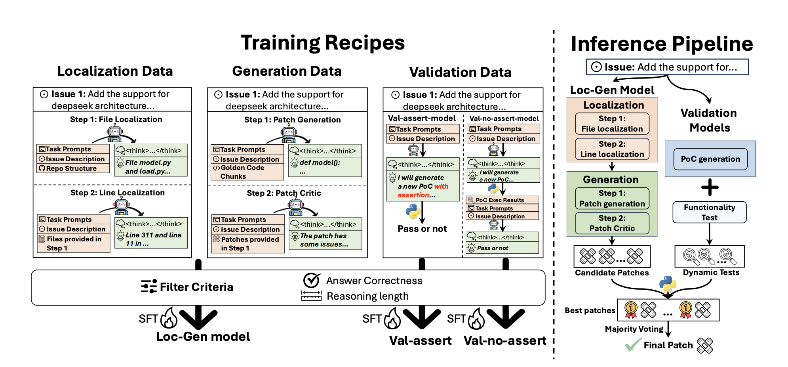
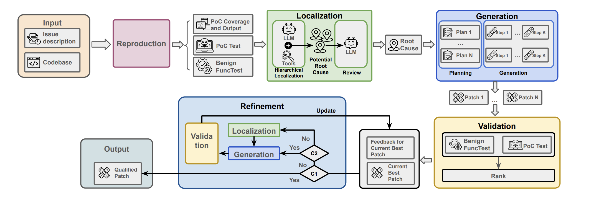
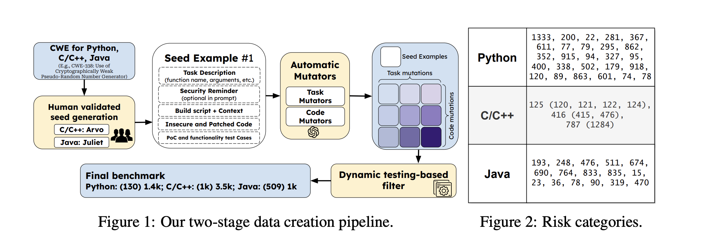

About Me
I am currently a Ph.D. student in Computer Science at UC Santa Barbara (UCSB), advised by Prof. Wenbo Guo. My research focuses on LLM for Code, Software Security and Program Analysis, with particular interests in automated software patching, code generation security, and AI-assisted software engineering. I am passionate about developing intelligent systems that can improve software security and reliability.
Education
PhD in Computer Science
UC Santa Barbara
2024.9 - Now
Bachelor in Information Security
Jinan University
2017.9 - 2021.6
Experience
Research Assistant
Hong Kong University of Science and Technology
2023.6 - 2024.6
• Advisor: Charles Zhang
• Topic: Program Analysis and Software Security
• Topic: Program Analysis and Software Security
Program Analysis Engineer
ByteDance
2021.7 - 2023.3
• Topic: Static Analysis and Code Security
Teaching
Teaching Assistant
CS9 Winter 2025
Publications

Co-PatcheR: Collaborative Software Patching with Component(s)-specific Small Reasoning Models
arXiv preprint 2025


SecCodePLT: A Unified Platform for Evaluating the Security of Code GenAI
arXiv preprint 2024